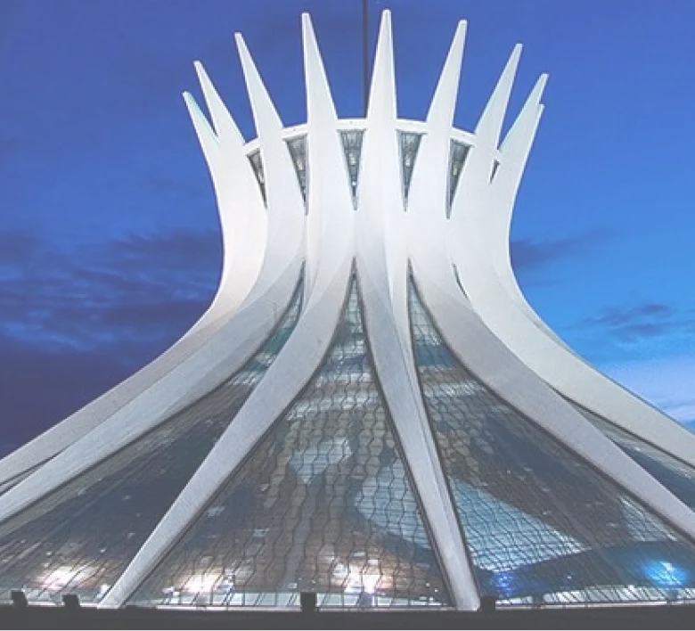

"Cathédrale de Brasilia : L'Élégance Futuriste d'Oscar Niemeyer"

Cathédrale de brasilia
Érigée comme un hymne à la modernité et à la spiritualité, la Cathédrale de Brasilia est bien plus qu'un lieu de culte ; c'est une œuvre d'art qui transcende les limites traditionnelles de l'architecture ecclésiastique.
Le Palais de Planalto à Brasília, conçu par Oscar Niemeyer, incarne l'essence même de son génie architectural. Inauguré en 1960 en tant que siège du pouvoir exécutif brésilien, le bâtiment évoque l'élégance et la modernité caractéristiques du style de Niemeyer.
Conçue par l'icône brésilienne Oscar Niemeyer dans les années 1960, cette cathédrale se distingue par sa structure audacieuse en forme de couronnes évoquant les mains ouvertes vers le ciel.
L'intérieur de la cathédrale est tout aussi captivant, baigné d'une lumière céleste qui filtre à travers les panneaux de verre coloré, créant une atmosphère envoûtante.